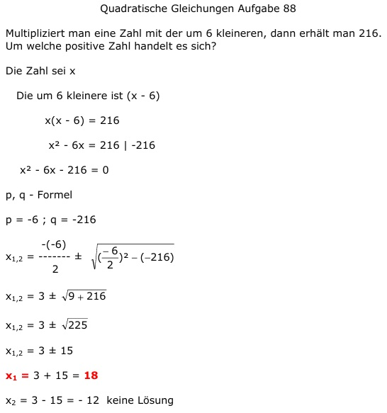

Aufgabe 88 Multipliziert man eine Zahl mit der um 6 kleineren, dann erhält man 216. Um welche positive Zahl handelt es sich? Die Zahl sei x Die um 6 kleinere ist (x - 6) x(x - 6) = 216 x2 - 6x = 216 | -216 x2 - 6x - 216 = 0 p, q - Formel p = -6 ; q = -216  x1,2 = 3 ± 15 x1 = 3 + 15 = 18 x2 = 3 - 15 = -12 keine Lösung